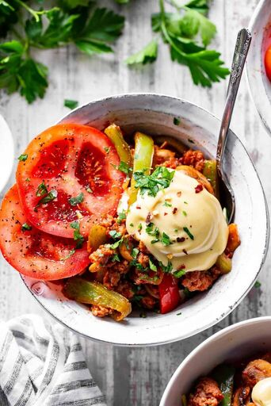

Pizza Bowls

Ingredients
Cheese Sauce
- 3/4 cup raw cashews no need to soak
- 2 tbsp fresh lemon juice
- 1/3 cup milk
- 2 tbsp avocado oil
- 1 tsp garlic powder
- 1/2 tsp salt
- 1 1/2 tbsp nutritional yeast
Pizza Bowl
- 2 tbsp olive oil
- 1 lb ground beef
- 1 medium onion thinly sliced
- 8 oz mushrooms thinly sliced
- 1 red bell pepper
- 1 green bell pepper
- 4 cloves garlic minced
- 3/4 cup pizza sauce
- 1 tsp italian seasoning
- 1/4 cup black olives
Recipe
Cheese Sauce
- You can prepare this before or after you make the meat and veggies. I like to blend it near the time of serving so it’s still warm.
- Place all ingredients in a high speed blender (I used a smaller one - Nutribullet) and blend/pulse until very creamy. You will need to stop blending to scrape down the sides and incorporate all the cashews. Once done, set aside until ready to use.
Pizza Bowl
- Heat a large skillet over medium high heat and add 1 Tbsp of oil. Once sizzling hot, crumble the sausage or ground meat into the skillet and cook, breaking up lumps as needed, until browned. Using a slotted spoon, ransfer the sausage to a bowl and set aside.
- Add the remaining tablespoon of oil to the skillet and once hot, add in the onions, mushrooms, and bell peppers. Season with salt and pepper and cook, stirring, for about 2-3 minutes. Add in the garlic and continue to cook with the veggies for another 1-2 minutes until the veggies are tender and golden.
- Add the sausage back to the skillet and stir in the pizza sauce and Italian seasoning. Remove from heat and stir in the olives too, if using. Divide the mixture into 4-5 bowls and top with a spoonful of cheese sauce plus sliced tomatoes, chopped fresh herbs, and crushed red pepper, if desired. Enjoy!